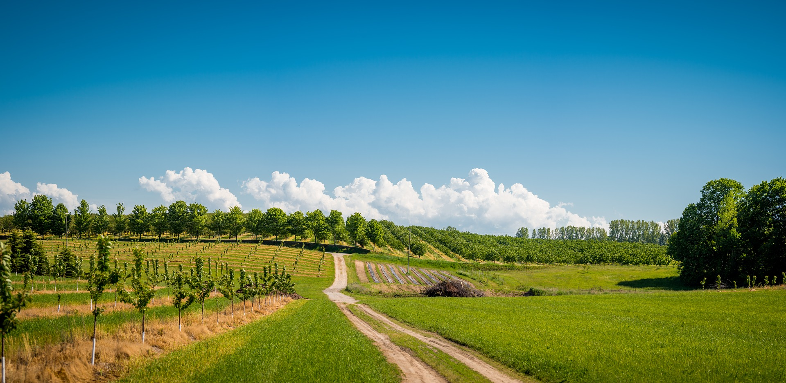

As you ride along the rural roads in Upper Montgomery County, you will still see a large number of beautiful farms with historic homes and barns that serve as a connection with our past. Every one of these farms has a story. Our story started in 1907, when Edwin and Minerva Horine stumbled across a parcel of land that looked like the perfect place to live and raise a family.
For 25 years, the Horine family farmed the land in a very traditional way, as thousands of farm families did during that era. In 1932, Phil Horine, the eldest son, had an idea to help his farm family weather the Depression – PEACHES!! While not commonly grown in the area, Phil introduced peaches to the community and found that the trees flourished and produced fruit with a distinctively sweet flavor.
Phil had a natural penchant for growing fruit and devoted his entire life to the farm. As the years passed, his focus turned toward finding a way to continue the family farm. He found his answer when Roland Kingsbury married his granddaughter, Peggy Horine. Roland and Peggy Kingsbury took charge of the farming operation in 1958, managing a Holstein dairy herd and peach orchard together for more than 50 years.
Roland brought his own passion for agriculture to the family operation and played a major role in shaping the future of the farm.
Today, Peggy’s son and daughter -- Gene Kingsbury and Sue Ketron -- continue to watch over the legacy passed along by their great grandfather, and they have expanded the orchard by adding apples, pears, nectarines, apricots and plums. We are especially fond of white peaches and nectarines, which have become a specialty at our orchard.
However, our most interesting addition in recent years is the “Kingsbury Pride” yellow freestone peach. Gene discovered Kingsbury Pride as a mutation growing on another peach variety in the late 1990s and went on to develop it as an exclusive variety for sale at our orchard. Starting from just two trees developed from the unique fruit buds, we have now expanded our plantings of Kingsbury Pride peaches to more than 200 trees. The Kingsbury Pride peach will be available for sale at our orchard on August 14. We hope you will try it this season and let us know what you think.
Thank you for visiting our web site and for supporting family farming in Montgomery County.